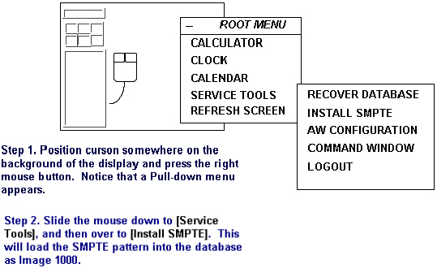
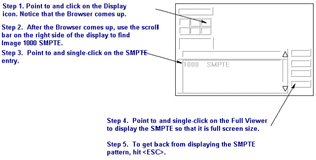

Operating Documentation
Direction 5133315-3, Rev# 14
Signa EXCITE HD 1.5T Service Methods
Module Version 1.0, Version Date 5/3/07
Operating Documentation |
| Required Persons | Preliminary Reqs | Procedure | Finalization |
|---|---|---|---|
| 1 |
The SMPTE (Society of Motion Picture and Television Engineers) test pattern is used to provide a standard image for calibrating the Window and Level of the display for an MR scanner.
The Window and Level adjustments must now be set to ensure site to site uniformity in image appearance. The SMPTE test pattern is available on the Operator Workstation Host Computer after IRIX, (The operating system) has been booted, and after you have logged into the system.
Install and display the SMPTE pattern using the steps in Illustration 1 Below:
Illustration 1: INSTALLING THE SMPTE PATTERN

Display the SMPTE Pattern by following the steps in Illustration 2 below. Switch to the Browser and select the SMPTE pattern from the patient list and display it.
If necessary, use the FORMAT option to select [Full Screen mode].
Illustration 2: INSTALLING THE SMPTE PATTERN

With the cursor inside the image displayed in Illustration 3, hold down the middle mouse button and move the mouse in the horizontal plane. View the window control value at the base of the image and set window control value to 100.
Illustration 3: SAMPLE SMPTE TEST PATTERN

With the cursor inside the displayed image, hold down the middle mouse button and move the mouse in the vertical plane. View the level control value at the base of the image and set level control value to 1024.
In this section you will adjust the Contrast and brightness controls of the LCD Monitor to optimize the SMPTE Test Pattern for the Window and Level controls. Minimal adjustment should be necessary at this time. However, it is important that you "fine tune" the Contrast and Brightness level using an industry Standard Test pattern. This is an iterative process done by adjusting the contrast, then brightness, and then back to contrast. To reduce visible tearing or smearing of the pattern, LOWER the contrast.
To access On Screen Manager OSMTM, press one of these buttons: +,- ,<, > .
Use the Control buttons  on the front of the monitor, to adjust the
Brightness and Contrast .
on the front of the monitor, to adjust the
Brightness and Contrast .
Look at the Pattern. If the 5% and 95% patches are not visible.(item 6, Illustration 3), adjust the brightness control of the display monitor until you can just barely see them. You may also need to re-adjust the contrast, if tearing or smearing of the pattern occurs. (items 1 and 2, and 5 through 8, Illustration 3). Continue adjusting both brightness and contrast until the image is as crisp and clear as you can make it, and the 5% and 95% patches are just barely visible.
When satisfied with the display, exit the menu to save the adjusted Contrast/Brightness settings.
| NOTE: | These settings will remain in effect even if power is removed or the system is re-booted. Because an operator can tamper with the Brightness and Contrast Adjustments, It is highly recommended that you make all operators aware of the affect they will have on system image quality. |
| NOTE: | If the operator chooses to deviate from this Brightness and Contrast adjustment, ensure the camera imaging and calibration has NOT been affected. |
Remove the SMPTE Pattern by selecting a different Exam from the browser.
No finalization steps.